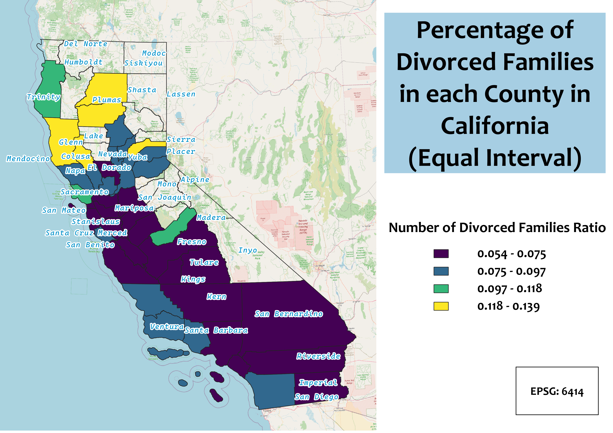
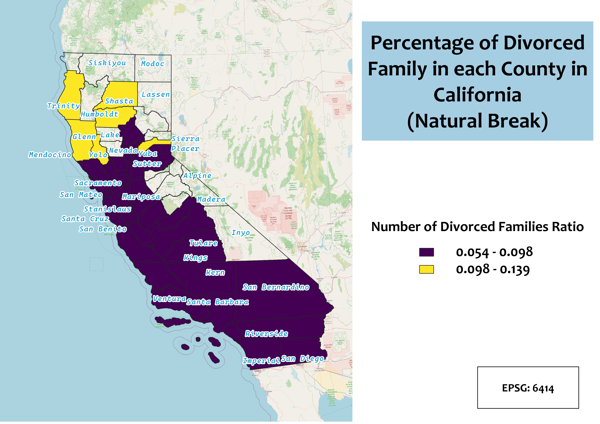
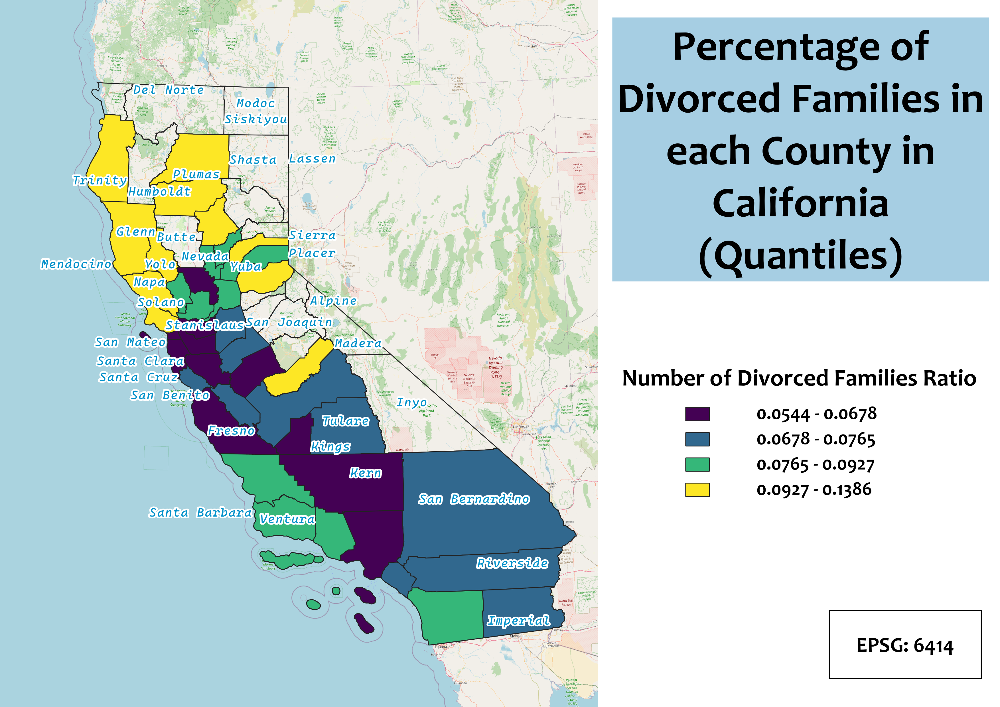

Homework 6B: Census data choropleth
Valen Zhang
The ratio I chose is the number of divorced families over the total population in each county. Choropleth maps tend to be
misleading when it comes to presenting counts: Counties with larger populations will seem to be on the higher end of the
spectrum. However, the reality might just be the opposite. Therefore, normalizing data is an important part of avoiding
misleading information. In this homework, I chose to use ratio of divorce and the total population. This tells the reader
the percentage of population that got divorced.
Equal Interval
This map presents maps with equal intervals. This maps clearly marked four different intervals. This makes it easier to
compute percentage. Meanwhile it can also lack information when a lot of counties falls under the same interval.

Natural Break
This map presents maps with natural breaks. This can most clearly distinguish different groups, however, when there are
only few clusters of counties, it will lack information for counties that falls in the same group.

Quantile
This map presents maps with quantiles, meaning there will always be same amount of counties for each group. However, some
of the group intervals might be really small, yet some might be surprisingly large. When data varies a lot, this map will not
be idea.

Data used for this project
Cleaned CSV dataset
Link to shapefile